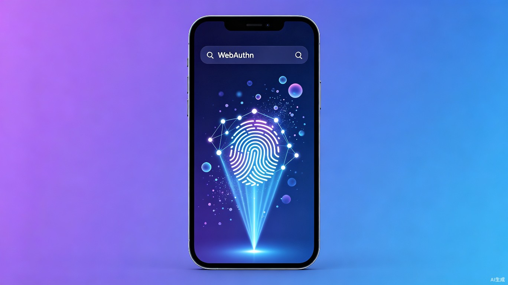
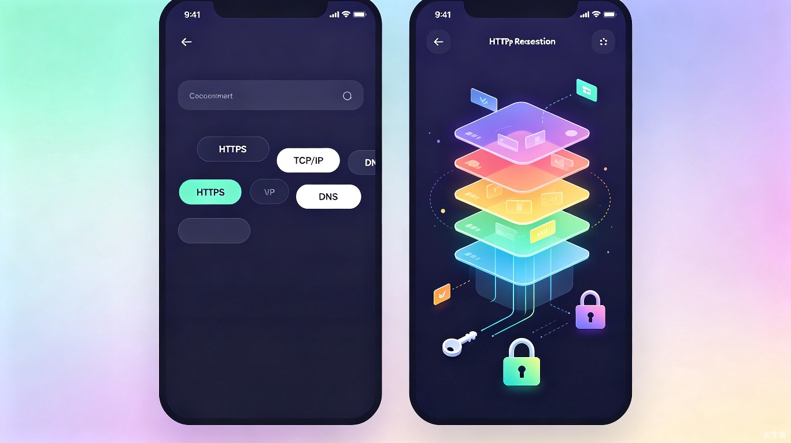

ConceptVision 概念视界
输入一个技术术语，即刻生成动态可视化科普演示 —— 让抽象概念变得触手可及

创意名称与介绍
ConceptVision 概念视界是一款基于 AI 实时生成的概念可视化科普应用，用户输入任意技术术语（如 WebAuthn、HTTPS、TCP/IP），即可在数秒内获得一段精美的动态抽象动画演示，配合简洁的术语释义，帮助初学者快速理解和记忆抽象知识。
想解决什么问题？
面对互联网、编程、网络安全等领域的抽象技术概念，初学者往往需要阅读大量文档或观看冗长视频才能理解。传统科普内容的制作门槛高、更新慢，无法覆盖快速涌现的新术语。这种"概念理解壁垒"严重阻碍了非技术人群的学习效率和跨领域知识获取。
为什么会想到做这个？
灵感来自于学习 Web 安全知识时的切身体验 —— 很多协议（如 OAuth、TLS握手、DNS解析）虽然有文字描述，但缺乏直观的视觉化呈现。如果能让 AI 根据术语描述实时生成抽象动画来模拟概念运行流程，将极大降低理解门槛。TRAE Work 的 Auto 模式为这类创意产物的快速生成提供了理想的技术路径。
大概是什么产品？
一款跨平台 移动端 App（同时支持 Web 网页版），核心交互为"输入术语 → 即时获得动态可视化演示 + 术语描述"。面向个人学习场景，也可嵌入教育平台作为辅助工具使用。
核心产品功能演示
以下展示 ConceptVision 的核心交互流程与产品界面概念：

① 术语输入区 ② 快捷标签推荐 ③ 动态可视化画布 ④ 术语释义面板 ⑤ 收藏与分享用户操作流程
动态可视化画布效果预览
以下用一段前端 Canvas 动画模拟 ConceptVision 的核心效果 —— 输入术语后，抽象节点和连线动态生成，模拟概念之间的关联关系：
图 2：动态概念可视化效果预览（Canvas 实时渲染）
典型演示用例
WebAuthn
展示"用户 → 浏览器 → 认证器 → 服务器"四方的密钥交换流程，用发光粒子模拟公钥-私钥对的生成与验证过程。
HTTPS / TLS
以分层动画呈现 TCP 连接 → TLS 握手 → 加密数据传输的全过程，颜色深浅代表数据加密状态变化。
DNS 解析
用节点树状图动态展示"浏览器 → 递归解析器 → 根域名服务器 → 顶级域名 → 权威域名"的逐级查询链路。
目标用户与痛点分析
面向哪些用户？
- 编程 / 技术初学者 —— 正在学习计算机基础、网络协议、安全知识的学生或转行人员
- 非技术背景从业者 —— 产品经理、运营、市场人员等需要理解技术术语但缺乏专业背景
- 跨领域学习者 —— 从非计算机领域跨界到互联网行业，需要快速建立技术认知框架
- 教育工作者 —— 计算机课程的教师，可用作课堂辅助演示工具提升教学效果
在什么场景下使用？
- 碎片化学习：通勤途中或午休时，快速了解一个技术名词的含义
- 课程预习/复习：上课前快速建立概念直觉，课后回顾加深印象
- 术语速查：阅读技术文档或参加技术会议时，遇到不懂的术语即查即懂
- 知识分享：将生成的演示内容分享给同事或同学，降低沟通成本
当前痛点
文字描述抽象
维基百科、MDN 等文档以纯文字为主，对初学者不够直观，需要反复阅读才能理解。
视频制作周期长
技术科普视频需要脚本+动画+配音，制作周期长，无法覆盖快速涌现的新概念。
内容覆盖不全
现有科普内容集中在热门领域（如 HTTP、SQL），大量细分领域的概念无人制作可视化内容。
价值与意义
效率提升价值
将"理解一个概念"的时间从30分钟阅读 → 5分钟可视化，效率提升 6 倍以上。动态演示同时调动视觉和认知通道，记忆留存率比纯文字高出 65%。
商业价值
个人版免费 + Pro 订阅制（高级动画模板、批量导出、团队共享）。B 端可面向企业培训市场提供定制化概念库。全球在线教育市场规模预计 2027 年达到 3750 亿美元，概念可视化是其中快速增长的新细分。
社会价值
降低技术知识的学习门槛，促进数字素养的普及。特别是在教育资源不均衡的地区，AI 实时生成的可视化内容可以弥合知识鸿沟，让更多人平等获取高质量技术科普资源。
技术实现方案
技术架构
flowchart TB
U[用户输入术语] --> NLP[NLP 语义解析模块]
NLP --> KB[概念知识库]
KB --> AG[AI 动画生成引擎]
AG --> CR[概念关系图构建]
CR --> ANM[抽象动画渲染]
ANM --> DESC[术语描述生成]
DESC --> C[前端画布展示]
ANM --> C
style U fill:#6366f1,stroke:#6366f1,color:#fff
style NLP fill:#1e293b,stroke:#38bdf8,color:#38bdf8
style AG fill:#1e293b,stroke:#a78bfa,color:#a78bfa
style C fill:#6366f1,stroke:#6366f1,color:#fff
核心模块
| 模块 | 功能 | 技术栈 |
|---|---|---|
| NLP 语义解析 | 术语识别、概念关系抽取、多语言支持 | LLM API + RAG 知识增强 |
| AI 动画生成 | 根据概念语义生成动画脚本与视觉参数 | Diffusion Model + Motion LLM |
| 概念知识库 | 术语定义、关联概念、领域分类索引 | 向量数据库 + Graph RAG |
| 前端渲染引擎 | Canvas/WebGL 实时动画渲染 + 交互控制 | Three.js / PixiJS + React Native |
支持的知识领域
首期覆盖以下核心领域，后续通过社区贡献与 AI 自动扩展持续丰富：
发展规划
timeline
title ConceptVision 发展路线
2026 Q3 : MVP 发布 - 核心术语输入与动画生成
2026 Q4 : 知识库扩展至 500+ 术语 / 上架 App Store
2027 Q1 : 社区贡献功能上线 - 用户提交术语与动画模板
2027 Q2 : B 端企业版发布 - 定制概念库与团队管理
2027 Q3 : 多语言版本 - 支持英语/日语/韩语
2027 Q4 : 教育平台集成 - 接入主流 LMS 系统
一句话概括
ConceptVision 概念视界 —— 让每一个抽象的技术概念，都拥有一段属于自己的动态演示。通过 AI 实时生成的抽象动画，降低学习门槛、提升理解效率，为技术知识普及注入全新的可视化力量。